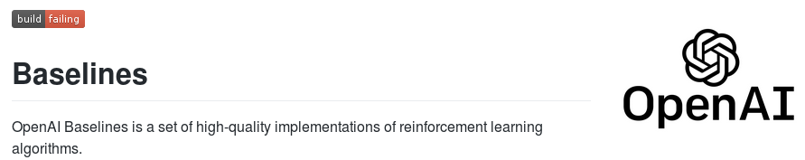

Stable Baselines Tutorial
Reinforcement Learning Made Easy
Who am I?

David (aka HASy)
ENSTA Robotique
Racing Robot
Baxter
Machine Learning for Control (1/2)
“Don't learn what you already know.”
Machine Learning for Control (2/2)
SRL (2/2)
"S-RL Toolbox: Environments, Datasets and Evaluation Metrics for SRL" (Raffin et al. 2018)

"Decoupling feature extraction from policy learning" (Raffin et al. 2018)
To fork or not to fork?



Maintainers
Ashley
Antonin
Adam
Maximilian
Features
Algorithms
Docstrings
class LinearSchedule(Schedule):
"""
Linear interpolation between initial_p and final_p over
schedule_timesteps. After this many timesteps pass
final_p is returned.
:param schedule_timesteps: (int) Number of timesteps for
which to linearly anneal initial_p to final_p
:param initial_p: (float) initial output value
:param final_p: (float) final output value
"""
Tests and Continuous Integration
Additional Topics
- Managing Open Source project (issues, contributing guide, ...)
- How to write tests for machine learning projects?
- How to implement and test RL algorithm
Multiprocessing: Vectorized Environments
import gym
from stable_baselines.common.vec_env import DummyVecEnv, SubprocVecEnv
from stable_baselines import A2C
def make_env(env_id, rank, seed=0):
"""
Utility function for multiprocessed env.
:param env_id: (str) the environment ID
:param num_env: (int) the number of environments you wish to have in subprocesses
:param seed: (int) the inital seed for RNG
:param rank: (int) index of the subprocess
"""
def _init():
env = gym.make(env_id)
env.seed(seed + rank)
return env
return _init
n_cpu = 8
env = DummyVecEnv([make_env('CartPole-v1', i) for i in range(n_cpu)])
model = A2C('MlpPolicy', env, verbose=1).learn(int(5e5))
Custom Policy Network
import tensorflow as tf
from stable_baselines import PPO2, SAC, TD3
# Common policies (A2C family: A2C, PPO, TRPO, ACKTR, ACER)
# Custom MLP policy of two layers of size 32 each with tanh
# activation function
policy_kwargs = dict(act_fun=tf.nn.tanh, net_arch=[32, 32])
# Different architecture for actor/critic
# net_arch=[128, dict(vf=[256], pi=[16])]
model = PPO2('MlpPolicy', 'Pendulum-v0', policy_kwargs=policy_kwargs)
# Custom Architecture (DDPG, SAC, TD3)
model = TD3('MlpPolicy', 'MountainCarContinous-v0',
policy_kwargs=dict(layers=[400, 300]))
Monitoring Training: Monitor Wrapper (1/3)
import gym
from stable_baselines import PPO2
from stable_baselines.common.vec_env import DummyVecEnv
from stable_baselines.bench import Monitor
env = Monitor(gym.make('CartPole-v1'), filename=None, allow_early_resets=True)
env = DummyVecEnv([lambda: env])
model = PPO2('MlpPolicy', env, verbose=1).learn(int(1e5))
Monitoring Training: Tensorboard (2/3)
from stable_baselines import SAC
model = SAC('MlpPolicy', 'LunarLanderContinuous-v2', verbose=1,
tensorboard_log='/tmp/sac/')
model.learn(int(1e5))
Monitoring Training: Callback (3/3)
import numpy as np
from stable_baselines import SAC
def callback(locals_, globals_):
self_ = locals_['self']
# Check every 1000 calls
if self_.n_callback_calls % 1000 == 0:
# Save best model (according to training reward)
if locals_.get('mean_reward', -np.inf) > self_.best_mean_reward:
print("Saving best model")
self_.save('sac_best')
self_.best_mean_reward = locals_['mean_reward']
# Stop training when target performance attained
if self_.best_mean_reward > -800:
print("Stopping training")
return False
self_.n_callback_calls += 1
return True
model = SAC("MlpPolicy", "Pendulum-v0", verbose=1)
# Define a properties to avoid global variables
model.best_mean_reward = -np.inf
model.n_callback_calls = 0
model.learn(100000, callback=callback)
RL Zoo: A collection of 120+ trained RL agents
- Provide a simple interface to train and enjoy RL agents
- Benchmark the different Reinforcement Learning algorithms
- Provide tuned hyperparameters for each environment and RL algorithm
- Have fun with the trained agents!
RL Zoo: Training
HalfCheetahBulletEnv-v0:
env_wrapper: utils.wrappers.TimeFeatureWrapper
n_timesteps: !!float 2e6
policy: 'MlpPolicy'
gamma: 0.99
buffer_size: 1000000
noise_type: 'normal'
noise_std: 0.1
learning_starts: 10000
batch_size: 100
learning_rate: !!float 1e-3
train_freq: 1000
gradient_steps: 1000
policy_kwargs: 'dict(layers=[400, 300])'
python train.py --algo td3 --env HalfCheetahBulletEnv-v0
python enjoy.py --algo td3 --env HalfCheetahBulletEnv-v0
python -m utils.record_video --algo td3 --env HalfCheetahBulletEnv-v0 -n 1000
RL Zoo: Hyperparameter Optimization
- Easy to setup
- Clean API
- Good documentation
- TPE, GP, CMAES, median pruner, ...
python train.py --algo ppo2 --env MountainCar-v0 \
--optimize --n-trials 1000 --n-jobs 2 \
--sampler tpe --pruner median
Projects using Stable Baselines
Learning to Drive in Minutes

- Racing car with only a camera
- VAE features + SAC
- Smooth control by limiting rate of change
- https://github.com/araffin/learning-to-drive-in-5-minutes
Making Roboy move with elegance
- Tendon-driven robot
- PPO2 / SAC
- Trained in simulation, tested on real hardware
- https://github.com/Roboy/DeepAndReinforced
RL Local Planner
- PPO2 on LIDAR 1D sensor
- Trained in simulation, tested in the real world
- https://github.com/RGring/drl_local_planner_ros_stable_baselines

Conclusion
- SRL for RL on real robots
- Best practices for ML project
- Easy to use and customizable RL lib
- More examples in the documentation
- Contributions are welcomed!